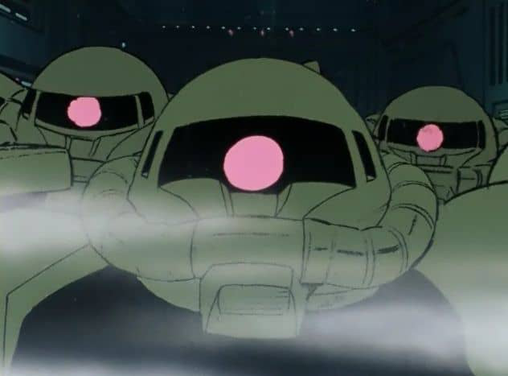

プロジェクト進捗11
光の見えるアイマスクについて9
カイロを作りたいところであるが時間に余裕がある土日に雨が多く、なかなか制作に進めないので先に袋の部分の制作から進めることを決めたのが前回の最後である。
今回使用する布は前回使った物と同じものを使った。

写真も前回と同じである。また、前作の失敗を踏まえて作りやすくて尚且つデザイン性も新しく考え直した。

まずは普通のコピー用紙に前回の実験で使ったラミジップを当て、型紙を作るまでは前作と同じである。

ラミジップの実際の大きさよりも1cm縫い代を作り、更に袋の幅に余裕を持たせることでカイロを出し入れしやすくする作戦である。

そして型紙を基に切り出した布がこちら。真四角なので作業もしやすく綺麗に作りやすい。前作は丸形にしたために縫いづらくなり、糸のほころびやダマが目立ちあまり綺麗とは言えないものになってしまっていたことから反省を踏まえた。
ミシンでの裁縫作業時の写真を撮り忘れる痛恨のミスをしてしまったが、完成したのはこちらである。

綺麗な四角形の袋が完成した。まだベルトをつけていないが、こちらはカイロの部分が完成した時に同時につける予定である。また、カイロを自由に出し入れし、汚れたときに洗濯ができるよう口を作った。

写真のように空のラミジップであるがピッタリ収まることができた。また、写真を忘れたが実践に近い実験として別のラミジップに水を入れて袋の中に水入りのまま収納してみたがこれも問題なく収納することができた。

そして最後に今回のアイマスク制作の要である目が見えるようにするための穴を開けた袋が写真の物である。前作は目の部分にピンポイントで穴をあけたことによる加工難易度の高さが課題であった。しかし、今回は「機動戦士ガンダム」に登場するジオン軍側の量産機である「ザク」から着想を得たデザインとなった。

前作の目の部分にピンポイントで穴をあけた作り方は製作難易度が高すぎるという点以外にも目の位置には個人差があるという点を考慮していなかった。
しかし、今回は点ではなく面で幅広く穴を開けたことでフリーサイズとなり、どんな人でも光が見えるようになった。また、直線の穴になったことで裾上げテープが張りやすくなり、前作のような毛羽立ちが目立たなくなったことで目元にチクチクした不快感と見た目の悪さを改善することに成功した。
次はメインとなるカイロの製作だが、前回の述べたようにお酢のような酸っぱい臭いが発生するとのことなので外で作ることが推奨されるがなかなか天候に恵まれないので遅れてしまうかもしれない。